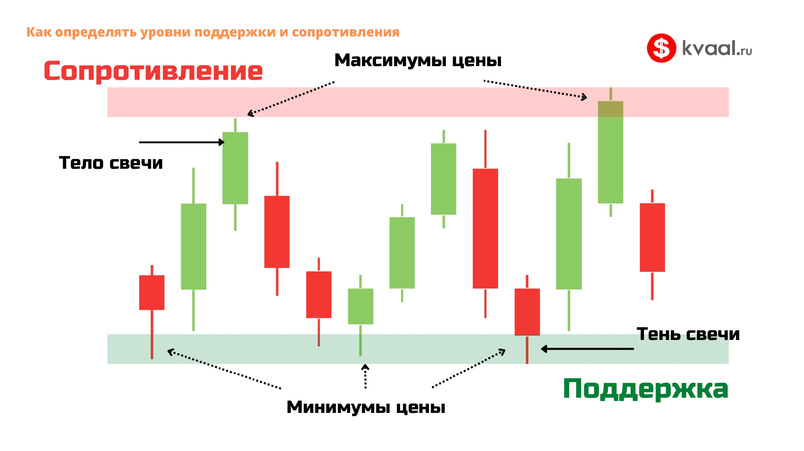

Что такое уровни
Уровень поддержки — это зона, где цена регулярно останавливает падение и разворачивается вверх. Здесь сосредоточены заявки на покупку.
Уровень сопротивления — зона, где цена регулярно останавливает рост и разворачивается вниз. Здесь сосредоточены заявки на продажу.

Почему уровни работают
Уровни существуют, потому что трейдеры помнят цены. Если цена уже отскакивала от 3000 три раза, трейдеры запоминают: «Около 3000 — покупают». И когда цена снова подходит к 3000 — они снова покупают. Так уровень работает.
Второй фактор — крупные заявки. Банки и фонды часто выставляют большие объёмы на определённых ценах. Когда цена подходит к ним, движение останавливается.
Как строить уровни
Простой алгоритм:
- Откройте график на старшем таймфрейме (H4 или D1).
- Найдите 3 и более касания на одном уровне цены.
- Проведите горизонтальную зону через эти касания.
- Чем больше касаний — тем сильнее уровень.
- Работайте с зоной, а не с линией.
Пробой уровня
Когда цена проходит уровень насквозь, происходит пробой. Это важное событие:
- Ложный пробой — цена пробила уровень, но быстро вернулась. Часто это сигнал в противоположную сторону.
- Истинный пробой — цена закрепилась за уровнем. Тогда уровень меняет роль: поддержка становится сопротивлением, и наоборот.
Как торговать от уровней
Основная стратегия простая:
- Цена подходит к сильному уровню поддержки → ищем сигнал на покупку (лонг).
- Цена подходит к сильному уровню сопротивления → ищем сигнал на продажу (шорт).
- Стоп-лосс ставим чуть за уровнем.
- Тейк-профит — на следующем уровне.
Что важно уяснить из урока
- Поддержка — снизу, сопротивление — сверху.
- Уровни — это зоны, а не тонкие линии.
- Чем больше касаний — тем сильнее уровень.
- Пробитый уровень меняет роль.
- Торгуем от уровней с подтверждением свечей.